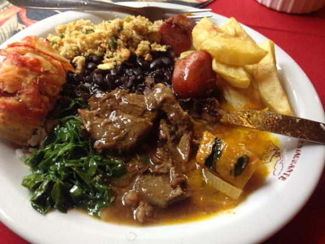

Descasque as batatas e cozinhe até ficarem al dente. Retire toda a polpa das laranjas e corte as cascas em tiras finas. Deixe ferver as cascas em uma panela, por cinco minutos, e coe-as. Repita o processo por 3 vezes para tirar o amargo da casca. Mas guarde a água da fervura e reserve as cascas.
Pincele todo o pato com óleo e tempere com sal e pimenta-do-reino a gosto. Em uma panela com um pouco de óleo, sele todos os lados do pato. Retire o pato e o óleo da panela, colocando a água da fervura da laranja com o açúcar na panela. Adicione o vinagre e mexa tudo até engrossar. Adicione o suco de 3 laranjas e o caldo de carne.
Volte o pato na panela, regue-o com o molho da panela e deixe cozinhar por duas horas, sempre regando ele a cada 10 minutos. Após cozido, esprema mais uma laranja e um limao na panela e coloque as batatas, as cascas de laranja e tempere com salsinha por cima.